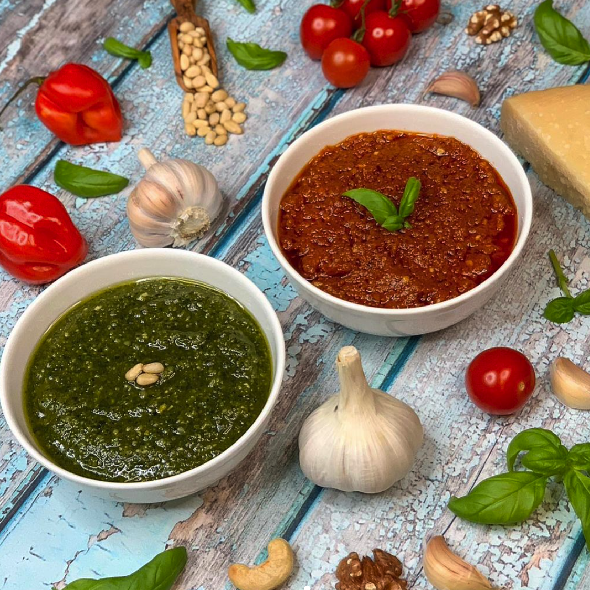

Pesto

Description
Pesto is a simple but highly effective pasta topping popular all across Italy. Traditionally made with a mortar and pestle, there are a wide variety of flavours. This page outlines the recipe for two of the most popular forms of pesto; Genovese and Calabrese.
Pesto Genovese
Ingredients
- 25g of basil leaves
- 50ml of extra virgin olive oil
- 30g of Parmigiano Reggiano, grated
- 10g of pine nuts
- 1/3 of a clove of garlic
- 1/3tsp of salt
Steps
- Add the garlic and salt to the mortar and crush the contents with the pestle.
- Add the pine nuts and 1tbsp of olive oil, then continue to crush until none of the pine nuts remain whole.
- Add the basil and the remainder of the olive oil, then crush and mix until the basil is reduced to a paste.
- Add the crated Parmigiano Reggiano and mix together well.
Pesto Calabrese
Ingredients
- 2 garlic cloves, crushed
- 1/2 of a red chilli, chopped and seeded
- 100g of sundried tomatoes in oil
- 30g of Parmigiano Reggiano, grated
- 1tbsp of extra virgin olive oil
- 1tsp of oregano
- 1/3tsp of salt
Steps
- Add the garlic, red chilli, salt, oregano and olive oil to the mortar and crush the contents with the pestle.
- Slowly add the sundried tomatoes (approximately 20g at a time) then crush and mix until it is reduced to a paste.
- Add the crated Parmigiano Reggiano and mix together well.